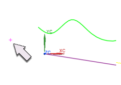
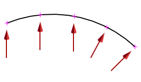

创建点和点集
预计完成这堂课需要：4–6 分钟
点是表示空间某一位置，具有唯一坐标集的曲线，它可以在随后创建的曲线和其它建模意图中使用。
您可以将点定位在相关的现存几何体，或者通过光标位置定位。这些方法提取了选择的几何对象(或光标)的位置以确定点的位置，当且仅当关联复选框被选中时，点的位置才与选定的几何体关联。
点集是是曲线、边或者相切曲线、边上的一系列点的集合。通过选中点集对话框中的关联复选框，就可以创建点集特征。这方便您选取整组点或者编辑创建点时使用的参数。如果关联复选框被清除，点集包含的点就必须单独选取，并且不从属于任何特征。
这里是一些使用点的例子。

